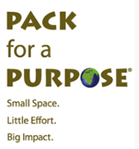

Conheça nossos parceiros
Conheça nossos parceiros
Brazilian Luxury Travel Association. Criada em 2008, a BLTA (Brazilian Luxury Travel Association) reúne os mais exclusivos hotéis, resorts, pousadas e operadoras do Brasil com o objetivo de promover experiências autênticas, sofisticadas e sustentáveis no país. Além da excelência alinhada aos valores do mercado de luxo global, a BLTA trabalha para mostrar o Brasil contemporâneo de maneira genuína e inovadora, imprimindo a hospitalidade criativa do brasileiro a todas as suas ações, que se traduz em viagens únicas de um país preparado para receber viajantes exigentes do mundo todo.
A Kiwano Hotels é líder em experiências de viagem com enfoque sustentável, listando propriedades excepcionais ao redor do mundo. Cada propriedade apresenta credenciais ecológicas em termos de conservação, uso de energia, destinação de resíduos e muito mais. Além disso, a Kiwano possui um blog com informações dos destinos e funciona como um disseminador de boas práticas sustentáveis.
O SUL Hotels – Small and Unique Lodgings – é um selo de hotelaria especializado na curadoria de pequenos hotéis e destinos surpreendentes pela América Latina e Caribe. Seu propósito é compartilhar verdadeiros tesouros escondidos, e através do selo garantir um padrão de excelência que sirva como referência para viajantes exigentes que valorizam uma experiência genuína, sem abrir mão de muito conforto. Entre os critérios de seleção estão: propriedades pequenas e intimistas, que possuem gestão independente e apresentam um excelente serviço, com atenção aos mínimos detalhes. Possuem localização única do ponto de vista natural e/ou cultural, e estão instalados em ambientes em total sintonia com esses locais. Através dessas características, o selo reúne hotéis em que o luxo se encontra na simplicidade e onde o viajante realmente possa viver uma imersão no destino através de experiências autênticas.

Organização que impacta positivamente comunidades ao redor do mundo, incentivando viajantes a trazerem contribuições significativas para os destinos que visitam. Você pode ajudar as comunidades com as quais o Cristalino Lodge e a Fundação Cristalino trabalham, trazendo pequenos itens como livros, itens de desenho, bolas de futebol, roupas e instrumentos musicais. Veja a lista (em inglês) no site da Pack for a Purpose.

A PURE Life Experiences reune experiências de viagem enriquecedoras e inspiradoras ao redor do mundo. Considerado um dos eventos mais importantes de turismo, a PURE Life Experiences baseia-se na crença de que o turismo tem a capacidade para enriquecer a vida, transformar as pessoas e, finalmente, mudar o mundo para o melhor. Num momento em que o mercado de viagens de alto padrão tornou-se oprimido pela oferta comoditizada de artigos de luxo, glamourizadas pela indústria de viagens de luxo tradicional, surgiu o movimento de que algo tinha que mudar. O viagente sofisticado de hoje afastou-se do conceito tradicional de luxo para uma idéia mais autêntica, culturalmente honesta de viagens e de experiências. Eles buscam a transformação pessoal, para viagens que impliquem em experiências poderosas e envolventes.
Conheça mais sobre nossas atividades clicando nos cards no topo da página.
Hotel Reserva natural
Santuário Ecológico
Brasil
reservanatural@gmail.com
55 11 3087 7612